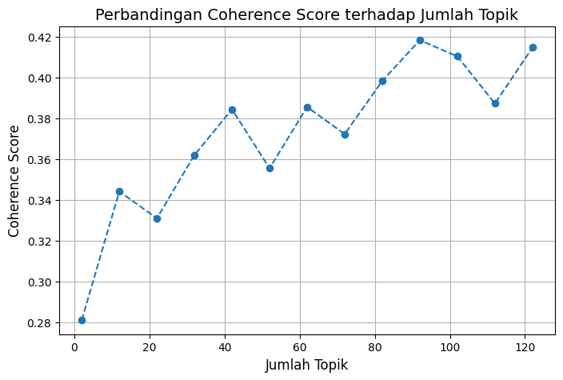
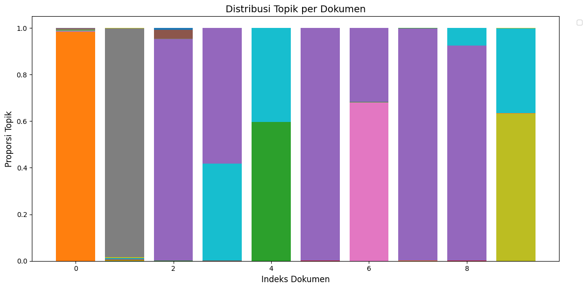
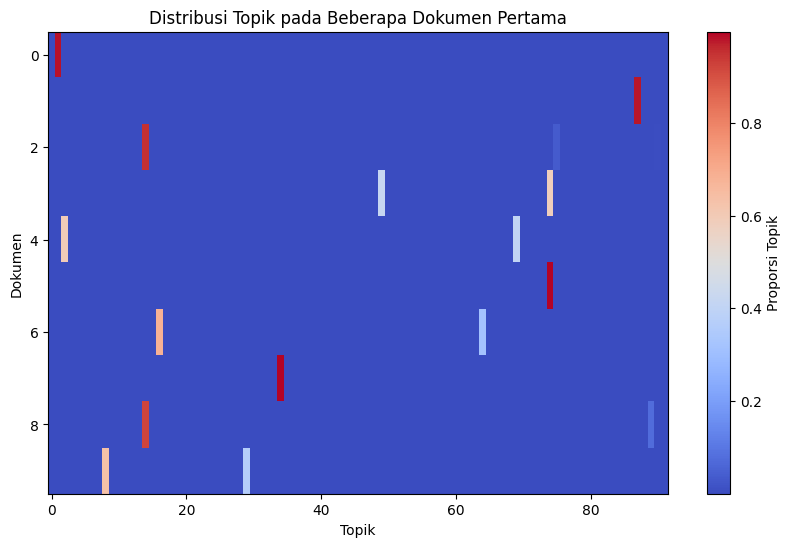
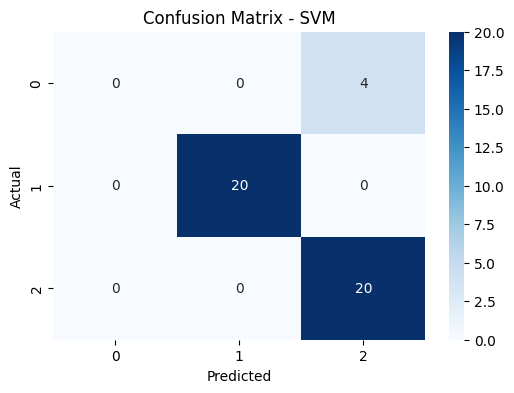
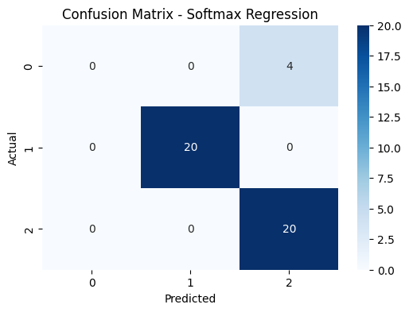

Klasifikasi Dengan LDA#
!pip install plotly
Requirement already satisfied: plotly in /home/codespace/.local/lib/python3.12/site-packages (6.2.0)
Requirement already satisfied: narwhals>=1.15.1 in /home/codespace/.local/lib/python3.12/site-packages (from plotly) (1.46.0)
Requirement already satisfied: packaging in /home/codespace/.local/lib/python3.12/site-packages (from plotly) (25.0)
[notice] A new release of pip is available: 25.1.1 -> 25.2
[notice] To update, run: python3 -m pip install --upgrade pip
!pip install -q nltk contractions emoji pyspellchecker Sastrawi
[notice] A new release of pip is available: 25.1.1 -> 25.2
[notice] To update, run: python3 -m pip install --upgrade pip
!pip install gensim
Requirement already satisfied: gensim in /usr/local/python/3.12.1/lib/python3.12/site-packages (4.3.3)
Requirement already satisfied: numpy<2.0,>=1.18.5 in /usr/local/python/3.12.1/lib/python3.12/site-packages (from gensim) (1.26.4)
Requirement already satisfied: scipy<1.14.0,>=1.7.0 in /usr/local/python/3.12.1/lib/python3.12/site-packages (from gensim) (1.13.1)
Requirement already satisfied: smart-open>=1.8.1 in /usr/local/python/3.12.1/lib/python3.12/site-packages (from gensim) (7.3.1)
Requirement already satisfied: wrapt in /usr/local/python/3.12.1/lib/python3.12/site-packages (from smart-open>=1.8.1->gensim) (1.17.3)
[notice] A new release of pip is available: 25.1.1 -> 25.2
[notice] To update, run: python3 -m pip install --upgrade pip
import re
import sys
import time
import string
import warnings
from collections import Counter
import pandas as pd
import numpy as np
import nltk
from nltk.tokenize import word_tokenize
from nltk.corpus import stopwords
from nltk.stem import PorterStemmer, WordNetLemmatizer
from Sastrawi.Stemmer.StemmerFactory import StemmerFactory
from spellchecker import SpellChecker
import contractions
import emoji
from gensim.models import Word2Vec, FastText
from gensim import corpora, models
from gensim.models import LdaModel
from gensim.models.coherencemodel import CoherenceModel
from sklearn.decomposition import PCA
from sklearn.feature_extraction.text import TfidfVectorizer
import requests
from bs4 import BeautifulSoup
import matplotlib.pyplot as plt
import plotly.graph_objects as go
from tqdm import tqdm
warnings.filterwarnings('ignore')
nltk.download("punkt")
nltk.download("punkt_tab")
# Download stopwords
nltk.download('stopwords')
[nltk_data] Downloading package punkt to /home/codespace/nltk_data...
[nltk_data] Package punkt is already up-to-date!
[nltk_data] Downloading package punkt_tab to
[nltk_data] /home/codespace/nltk_data...
[nltk_data] Package punkt_tab is already up-to-date!
[nltk_data] Downloading package stopwords to
[nltk_data] /home/codespace/nltk_data...
[nltk_data] Package stopwords is already up-to-date!
True
Crawling Berita#
def berita(categories, pages_per_category=1):
start_time = time.time() # mulai hitung waktu
BASE_URL = "https://www.tempo.co/indeks?page={}&category=rubrik&rubric_slug={}"
data = {
"id_berita": [],
"judul_berita": [],
"isi_berita": [],
"kategori_berita": []
}
for cat_id, cat in enumerate(categories, start=1):
for page in range(1, pages_per_category+1):
url = BASE_URL.format(page, cat)
r = requests.get(url, headers={"User-Agent": "Mozilla/5.0"})
soup = BeautifulSoup(r.text, "html.parser")
articles = soup.select("figure figcaption a")
for a in articles:
link = "https://www.tempo.co" + a["href"]
title = a.get_text(strip=True)
id_match = re.search(r"-(\d+)$", link)
berita_id = id_match.group(1) if id_match else None
try:
content = get_article_content(link)
except:
content = ""
data["id_berita"].append(berita_id)
data["judul_berita"].append(title)
data["isi_berita"].append(content)
data["kategori_berita"].append(cat)
print_progress2(cat, page, pages_per_category)
df = pd.DataFrame(data)
df.to_csv("tempo_berita.csv", index=False, encoding="utf-8-sig")
end_time = time.time()
elapsed = int(end_time - start_time)
jam, sisa = divmod(elapsed, 3600)
menit, detik = divmod(sisa, 60)
# summary
print("\n✅ Seluruh data berhasil dikumpulkan!")
print(f"📊 Total entri: {len(df)}")
print(f"⏱️ Waktu eksekusi: {jam} jam {menit} menit {detik} detik")
return None
berita = pd.read_csv("tempo_berita.csv")
berita
| id_berita | judul_berita | isi_berita | kategori_berita | |
|---|---|---|---|---|
| 0 | 2070560 | Habis Demo Berujung Rusuh Terbitlah Siskamling | ATAP berukuran 5 x 3 meter menaungi Jalan Kema... | politik |
| 1 | 2070554 | Siskamling: Warisan Orde Baru yang Dihidupkan ... | MENTERI Dalam NegeriTito Karnavianmeminta peme... | politik |
| 2 | 2070547 | 6.118 Aparat Gabungan Disiagakan Jaga Demo di ... | ASOSIASI pengemudiojekonlineGarda Indonesia be... | politik |
| 3 | 2070538 | Prabowo Dikabarkan akan Melakukan Reshuffle Ka... | PRESIDENPrabowo Subiantodikabarkan akan melaku... | politik |
| 4 | 2070529 | Fakta Terbaru Soal Ompreng MBG Diduga Mengandu... | ISU dugaanompreng atau wadah makan bergizi gra... | politik |
| ... | ... | ... | ... | ... |
| 215 | 2070442 | Kejagung Periksa Anak Jusuf Hamka soal Dugaan ... | Kejaksaan Agung memeriksa Fitria Yusuf, anak p... | ekonomi |
| 216 | 2070429 | Martubung, Kawasan Padat Penduduk di Medan yan... | TAMAN kolam retensi, tepat di samping Perumnas... | ekonomi |
| 217 | 2070424 | KAI Siapkan Promo Tarif Flat Rp 80 Ribu saat H... | PT KERETA Api Indonesia (Persero) atauKAIsecar... | ekonomi |
| 218 | 2070420 | KKP Bilang Penguggah Video Tanggul Beton di Ci... | NaN | ekonomi |
| 219 | 2070417 | Purbaya: Tiap 0,5 Persen Pertumbuhan Ekonomi P... | NaN | ekonomi |
220 rows × 4 columns
Fungsi cleaning dengan emoji#
def clean_text(text):
if not isinstance(text, str):
return ""
text = text.lower() # huruf kecil
text = emoji.demojize(text) # ubah emoji jadi teks, misal 😀 -> :grinning_face:
text = re.sub(r'\d+', '', text) # hapus angka
text = text.translate(str.maketrans('', '', string.punctuation)) # hapus tanda baca
text = re.sub(r'\W', ' ', text) # hapus karakter non-kata
text = BeautifulSoup(text, "html.parser").get_text() # hapus tag HTML
text = re.sub(r'\s+', ' ', text).strip() # normalisasi spasi
return text
# Baca CSV
tempo_df = pd.read_csv("tempo_berita.csv", dtype=str).fillna("")
# Terapkan langsung ke kolom target
tempo_df["isi_berita_clean"] = tempo_df["isi_berita"].apply(clean_text)
# Cleaning kolom target
tempo_df["isi_berita_clean"] = tempo_df["isi_berita"].apply(clean_text)
print("\nBerita (tempo_berita):")
tempo_df[["isi_berita", "isi_berita_clean"]].head(10)
Berita (tempo_berita):
| isi_berita | isi_berita_clean | |
|---|---|---|
| 0 | ATAP berukuran 5 x 3 meter menaungi Jalan Kema... | atap berukuran x meter menaungi jalan kemanggi... |
| 1 | MENTERI Dalam NegeriTito Karnavianmeminta peme... | menteri dalam negeritito karnavianmeminta peme... |
| 2 | ASOSIASI pengemudiojekonlineGarda Indonesia be... | asosiasi pengemudiojekonlinegarda indonesia be... |
| 3 | PRESIDENPrabowo Subiantodikabarkan akan melaku... | presidenprabowo subiantodikabarkan akan melaku... |
| 4 | ISU dugaanompreng atau wadah makan bergizi gra... | isu dugaanompreng atau wadah makan bergizi gra... |
| 5 | MENTERI Koordinator Bidang PerekonomianAirlang... | menteri koordinator bidang perekonomianairlang... |
| 6 | MAHKAMAHKonstitusi atauMKakan membacakan putus... | mahkamahkonstitusi ataumkakan membacakan putus... |
| 7 | LEMBAGAPengelola Dana Pendidikan atauLPDPmeman... | lembagapengelola dana pendidikan ataulpdpmeman... |
| 8 | ASOSIASIPengemudi OjekOnlineGarda Indonesia ak... | asosiasipengemudi ojekonlinegarda indonesia ak... |
| 9 | KOMISIPemilihan Umum(KPU) membatalkan aturan m... | komisipemilihan umumkpu membatalkan aturan men... |
# Tokenisasi untuk PTA
tempo_df["isi_berita_tokens"] = tempo_df["isi_berita_clean"].apply(word_tokenize)
print("\nBerita (isi_berita_tokens):")
tempo_df[["isi_berita_clean", "isi_berita_tokens"]].head(10)
Berita (isi_berita_tokens):
| isi_berita_clean | isi_berita_tokens | |
|---|---|---|
| 0 | atap berukuran x meter menaungi jalan kemanggi... | [atap, berukuran, x, meter, menaungi, jalan, k... |
| 1 | menteri dalam negeritito karnavianmeminta peme... | [menteri, dalam, negeritito, karnavianmeminta,... |
| 2 | asosiasi pengemudiojekonlinegarda indonesia be... | [asosiasi, pengemudiojekonlinegarda, indonesia... |
| 3 | presidenprabowo subiantodikabarkan akan melaku... | [presidenprabowo, subiantodikabarkan, akan, me... |
| 4 | isu dugaanompreng atau wadah makan bergizi gra... | [isu, dugaanompreng, atau, wadah, makan, bergi... |
| 5 | menteri koordinator bidang perekonomianairlang... | [menteri, koordinator, bidang, perekonomianair... |
| 6 | mahkamahkonstitusi ataumkakan membacakan putus... | [mahkamahkonstitusi, ataumkakan, membacakan, p... |
| 7 | lembagapengelola dana pendidikan ataulpdpmeman... | [lembagapengelola, dana, pendidikan, ataulpdpm... |
| 8 | asosiasipengemudi ojekonlinegarda indonesia ak... | [asosiasipengemudi, ojekonlinegarda, indonesia... |
| 9 | komisipemilihan umumkpu membatalkan aturan men... | [komisipemilihan, umumkpu, membatalkan, aturan... |
Stopwords#
# Stopwords untuk bahasa Indonesia
stop_words_id = set(stopwords.words('indonesian'))
# Filter stopwords di PTA
tempo_df["isi_berita_filtered"] = tempo_df["isi_berita_tokens"].apply(
lambda tokens: [word for word in tokens if word not in stop_words_id]
)
print("\nBerita (isi_berita_filtered):")
tempo_df[["isi_berita_tokens", "isi_berita_filtered"]].head(10)
Berita (isi_berita_filtered):
| isi_berita_tokens | isi_berita_filtered | |
|---|---|---|
| 0 | [atap, berukuran, x, meter, menaungi, jalan, k... | [atap, berukuran, x, meter, menaungi, jalan, k... |
| 1 | [menteri, dalam, negeritito, karnavianmeminta,... | [menteri, negeritito, karnavianmeminta, pemeri... |
| 2 | [asosiasi, pengemudiojekonlinegarda, indonesia... | [asosiasi, pengemudiojekonlinegarda, indonesia... |
| 3 | [presidenprabowo, subiantodikabarkan, akan, me... | [presidenprabowo, subiantodikabarkan, melakuka... |
| 4 | [isu, dugaanompreng, atau, wadah, makan, bergi... | [isu, dugaanompreng, wadah, makan, bergizi, gr... |
| 5 | [menteri, koordinator, bidang, perekonomianair... | [menteri, koordinator, bidang, perekonomianair... |
| 6 | [mahkamahkonstitusi, ataumkakan, membacakan, p... | [mahkamahkonstitusi, ataumkakan, membacakan, p... |
| 7 | [lembagapengelola, dana, pendidikan, ataulpdpm... | [lembagapengelola, dana, pendidikan, ataulpdpm... |
| 8 | [asosiasipengemudi, ojekonlinegarda, indonesia... | [asosiasipengemudi, ojekonlinegarda, indonesia... |
| 9 | [komisipemilihan, umumkpu, membatalkan, aturan... | [komisipemilihan, umumkpu, membatalkan, aturan... |
factory = StemmerFactory()
indo_stemmer = factory.create_stemmer()
tempo_df["isi_berita_stemmed"] = tempo_df["isi_berita_filtered"].apply(
lambda tokens: [indo_stemmer.stem(word) for word in tokens]
)
---------------------------------------------------------------------------
KeyboardInterrupt Traceback (most recent call last)
Cell In[14], line 4
1 factory = StemmerFactory()
2 indo_stemmer = factory.create_stemmer()
----> 4 tempo_df["isi_berita_stemmed"] = tempo_df["isi_berita_filtered"].apply(
5 lambda tokens: [indo_stemmer.stem(word) for word in tokens]
6 )
File ~/.local/lib/python3.12/site-packages/pandas/core/series.py:4935, in Series.apply(self, func, convert_dtype, args, by_row, **kwargs)
4800 def apply(
4801 self,
4802 func: AggFuncType,
(...) 4807 **kwargs,
4808 ) -> DataFrame | Series:
4809 """
4810 Invoke function on values of Series.
4811
(...) 4926 dtype: float64
4927 """
4928 return SeriesApply(
4929 self,
4930 func,
4931 convert_dtype=convert_dtype,
4932 by_row=by_row,
4933 args=args,
4934 kwargs=kwargs,
-> 4935 ).apply()
File ~/.local/lib/python3.12/site-packages/pandas/core/apply.py:1422, in SeriesApply.apply(self)
1419 return self.apply_compat()
1421 # self.func is Callable
-> 1422 return self.apply_standard()
File ~/.local/lib/python3.12/site-packages/pandas/core/apply.py:1502, in SeriesApply.apply_standard(self)
1496 # row-wise access
1497 # apply doesn't have a `na_action` keyword and for backward compat reasons
1498 # we need to give `na_action="ignore"` for categorical data.
1499 # TODO: remove the `na_action="ignore"` when that default has been changed in
1500 # Categorical (GH51645).
1501 action = "ignore" if isinstance(obj.dtype, CategoricalDtype) else None
-> 1502 mapped = obj._map_values(
1503 mapper=curried, na_action=action, convert=self.convert_dtype
1504 )
1506 if len(mapped) and isinstance(mapped[0], ABCSeries):
1507 # GH#43986 Need to do list(mapped) in order to get treated as nested
1508 # See also GH#25959 regarding EA support
1509 return obj._constructor_expanddim(list(mapped), index=obj.index)
File ~/.local/lib/python3.12/site-packages/pandas/core/base.py:925, in IndexOpsMixin._map_values(self, mapper, na_action, convert)
922 if isinstance(arr, ExtensionArray):
923 return arr.map(mapper, na_action=na_action)
--> 925 return algorithms.map_array(arr, mapper, na_action=na_action, convert=convert)
File ~/.local/lib/python3.12/site-packages/pandas/core/algorithms.py:1743, in map_array(arr, mapper, na_action, convert)
1741 values = arr.astype(object, copy=False)
1742 if na_action is None:
-> 1743 return lib.map_infer(values, mapper, convert=convert)
1744 else:
1745 return lib.map_infer_mask(
1746 values, mapper, mask=isna(values).view(np.uint8), convert=convert
1747 )
File pandas/_libs/lib.pyx:2999, in pandas._libs.lib.map_infer()
Cell In[14], line 5, in <lambda>(tokens)
1 factory = StemmerFactory()
2 indo_stemmer = factory.create_stemmer()
4 tempo_df["isi_berita_stemmed"] = tempo_df["isi_berita_filtered"].apply(
----> 5 lambda tokens: [indo_stemmer.stem(word) for word in tokens]
6 )
File /usr/local/python/3.12.1/lib/python3.12/site-packages/Sastrawi/Stemmer/CachedStemmer.py:20, in CachedStemmer.stem(self, text)
18 stems.append(self.cache.get(word))
19 else:
---> 20 stem = self.delegatedStemmer.stem(word)
21 self.cache.set(word, stem)
22 stems.append(stem)
File /usr/local/python/3.12.1/lib/python3.12/site-packages/Sastrawi/Stemmer/Stemmer.py:27, in Stemmer.stem(self, text)
24 stems = []
26 for word in words:
---> 27 stems.append(self.stem_word(word))
29 return ' '.join(stems)
File /usr/local/python/3.12.1/lib/python3.12/site-packages/Sastrawi/Stemmer/Stemmer.py:36, in Stemmer.stem_word(self, word)
34 return self.stem_plural_word(word)
35 else:
---> 36 return self.stem_singular_word(word)
File /usr/local/python/3.12.1/lib/python3.12/site-packages/Sastrawi/Stemmer/Stemmer.py:84, in Stemmer.stem_singular_word(self, word)
82 """Stem a singular word to its common stem form."""
83 context = Context(word, self.dictionary, self.visitor_provider)
---> 84 context.execute()
86 return context.result
File /usr/local/python/3.12.1/lib/python3.12/site-packages/Sastrawi/Stemmer/Context/Context.py:37, in Context.execute(self)
34 """Execute stemming process; the result can be retrieved with result"""
36 #step 1 - 5
---> 37 self.start_stemming_process()
39 #step 6
40 if self.dictionary.contains(self.current_word):
File /usr/local/python/3.12.1/lib/python3.12/site-packages/Sastrawi/Stemmer/Context/Context.py:80, in Context.start_stemming_process(self)
77 return
79 #step 4, 5
---> 80 self.remove_prefixes()
81 if self.dictionary.contains(self.current_word):
82 return
File /usr/local/python/3.12.1/lib/python3.12/site-packages/Sastrawi/Stemmer/Context/Context.py:89, in Context.remove_prefixes(self)
87 def remove_prefixes(self):
88 for i in range(3):
---> 89 self.accept_prefix_visitors(self.prefix_pisitors)
90 if self.dictionary.contains(self.current_word):
91 return
File /usr/local/python/3.12.1/lib/python3.12/site-packages/Sastrawi/Stemmer/Context/Context.py:110, in Context.accept_prefix_visitors(self, visitors)
108 removalCount = len(self.removals)
109 for visitor in visitors:
--> 110 self.accept(visitor)
111 if self.dictionary.contains(self.current_word):
112 return self.current_word
File /usr/local/python/3.12.1/lib/python3.12/site-packages/Sastrawi/Stemmer/Context/Context.py:97, in Context.accept(self, visitor)
96 def accept(self, visitor):
---> 97 visitor.visit(self)
File /usr/local/python/3.12.1/lib/python3.12/site-packages/Sastrawi/Stemmer/Context/Visitor/AbstractDisambiguatePrefixRule.py:15, in AbstractDisambiguatePrefixRule.visit(self, context)
13 for disambiguator in self.disambiguators:
14 result = disambiguator.disambiguate(context.current_word)
---> 15 if context.dictionary.contains(result):
16 break
18 if not result:
KeyboardInterrupt:
print("\nBerita - Stemming & Lemmatization (abstrak_id):")
tempo_df[["isi_berita_filtered", "isi_berita_stemmed"]].head(10)
Berita - Stemming & Lemmatization (abstrak_id):
| isi_berita_filtered | isi_berita_stemmed | |
|---|---|---|
| 0 | [atap, berukuran, x, meter, menaungi, jalan, k... | [atap, ukur, x, meter, taung, jalan, manggis, ... |
| 1 | [menteri, negeritito, karnavianmeminta, pemeri... | [menteri, negeritito, karnavianmeminta, perint... |
| 2 | [asosiasi, pengemudiojekonlinegarda, indonesia... | [asosiasi, pengemudiojekonlinegarda, indonesia... |
| 3 | [presidenprabowo, subiantodikabarkan, melakuka... | [presidenprabowo, subiantodikabarkan, melakuka... |
| 4 | [isu, dugaanompreng, wadah, makan, bergizi, gr... | [isu, dugaanompreng, wadah, makan, gizi, grati... |
| 5 | [menteri, koordinator, bidang, perekonomianair... | [menteri, koordinator, bidang, perekonomianair... |
| 6 | [mahkamahkonstitusi, ataumkakan, membacakan, p... | [mahkamahkonstitusi, ataumkakan, baca, putus, ... |
| 7 | [lembagapengelola, dana, pendidikan, ataulpdpm... | [lembagapengelola, dana, didik, ataulpdpmemang... |
| 8 | [asosiasipengemudi, ojekonlinegarda, indonesia... | [asosiasipengemudi, ojekonlinegarda, indonesia... |
| 9 | [komisipemilihan, umumkpu, membatalkan, aturan... | [komisipemilihan, umumkpu, batal, atur, batas,... |
Fungsi expand kontraksi bahasa Indonesia#
def expand_indonesian_contractions(text):
contractions_dict = {
"gak": "tidak", "ga": "tidak", "nggak": "tidak", "enggak": "tidak", "ngga": "tidak", "gk": "tidak", "tdk": "tidak", "tk": "tidak",
"gue": "saya", "gw": "saya", "gua": "saya", "sy": "saya", "aq": "saya", "q": "saya", "ane": "saya",
"lu": "kamu", "loe": "kamu", "lo": "kamu", "km": "kamu", "kmu": "kamu", "elu": "kamu",
"dah": "sudah", "udah": "sudah", "sdh": "sudah", "udh": "sudah",
"blm": "belum", "td": "tadi", "ntar": "nanti", "skr": "sekarang", "skrg": "sekarang", "skg": "sekarang",
"kmrn": "kemarin", "kemrn": "kemarin", "kmarin": "kemarin",
"aja": "saja", "aj": "saja", "sj": "saja",
"nih": "ini", "nie": "ini", "ni": "ini", "tuh": "itu", "gtu": "begitu", "gitu": "begitu",
"trs": "terus", "trus": "terus",
"yg": "yang", "utk": "untuk", "dlm": "dalam", "dr": "dari", "dg": "dengan", "jd": "jadi", "jg": "juga",
"krn": "karena", "tp": "tetapi", "tpi": "tetapi", "sm": "sama", "thd": "terhadap",
"dll": "dan lain-lain", "dsb": "dan sebagainya", "dst": "dan seterusnya",
"banget": "sekali", "bgt": "sekali", "sgt": "sangat", "sngt": "sangat",
"lg": "sedang", "sdg": "sedang",
"dl": "dulu", "pls": "tolong", "tolongin": "tolong", "plis": "tolong",
"wkwk": "tertawa", "wkwkwk": "tertawa", "hehe": "tertawa kecil", "hihi": "tertawa kecil",
"btw": "ngomong-ngomong", "imo": "menurut saya", "imho": "menurut saya", "cmiiw": "koreksi jika saya salah",
"idk": "saya tidak tahu", "jk": "hanya bercanda",
"ok": "baik", "oke": "baik", "okey": "baik", "sip": "baik",
"ciyus": "serius", "serem": "menyeramkan",
"kl": "kalau", "klo": "kalau", "klu": "kalau",
"spy": "supaya", "spya": "supaya",
"bbrp": "beberapa", "tsb": "tersebut", "trsbt": "tersebut",
"dpt": "dapat", "bs": "bisa", "bsa": "bisa",
"stlh": "setelah", "sblm": "sebelum",
"mnj": "manajemen", "man": "manajemen", "mgt": "management",
"org": "organisasi", "org2": "organisasi", "orgzt": "organisasi",
"str": "struktur", "stkt": "struktur",
"ldr": "leader", "ldrshp": "leadership", "pimp": "pimpinan", "pemimp": "pemimpin",
"pln": "perencanaan", "renc": "perencanaan", "plan": "perencanaan",
"orgz": "organizing", "orgzn": "organisasi",
"dir": "directing", "pgn": "pengarahan",
"cnt": "control", "cont": "control", "ctrl": "kontrol", "pengend": "pengendalian",
"eff": "efisiensi", "effct": "efektivitas",
"sdm": "sumber daya manusia", "hr": "human resource", "hrd": "human resource development",
"res": "resource", "rsc": "resource", "sda": "sumber daya alam",
"inv": "investasi", "invt": "investasi",
"pmas": "pemasaran", "mkt": "marketing", "mktg": "marketing",
"prod": "produksi", "prdks": "produksi",
"fin": "finance", "keu": "keuangan", "akut": "akuntansi", "acct": "akuntansi",
"ris": "risiko", "rsko": "risiko",
"anal": "analisis", "eval": "evaluasi",
"strtg": "strategi", "stg": "strategi",
"ops": "operasi", "opr": "operasional", "oprs": "operasional",
"bsc": "balanced scorecard", "swot": "analisis swot", "pest": "analisis pest",
"csr": "corporate social responsibility", "gcn": "good corporate governance",
"qm": "quality management", "iso": "standar iso",
"kpi": "key performance indicator", "indik": "indikator",
"knowl": "knowledge management", "kmgt": "knowledge management",
"chg": "change management", "innv": "inovasi",
"cnfl": "konflik", "cnflt": "konflik",
"krj": "kerja", "tm": "tim", "tmwrk": "kerja sama tim",
"cst": "cost", "faktorfaktor": "faktor", "bya": "biaya",
"val": "nilai", "valu": "value",
"proj": "proyek", "prjk": "proyek",
"med": "medis", "obat2": "obat-obatan", "rs": "rumah sakit",
"dok": "dokter", "drg": "dokter gigi", "prof": "profesor",
"pt": "perguruan tinggi", "univ": "universitas", "fak": "fakultas",
"skripsi": "skripsi", "tesis": "tesis", "disertasi": "disertasi",
"mhs": "mahasiswa", "mhsw": "mahasiswa"
}
pattern = r'\b(' + '|'.join(re.escape(key) for key in contractions_dict.keys()) + r')\b'
def replace_match(match):
return contractions_dict[match.group(0).lower()]
expanded_text = re.sub(pattern, replace_match, text, flags=re.IGNORECASE)
return expanded_text
tempo_df["isi_berita_expanded"] = tempo_df["isi_berita_stemmed"].apply(
lambda tokens: expand_indonesian_contractions(" ".join(tokens)).split()
)
print("\nBerita - Isi berita (expanded):")
tempo_df[["isi_berita_stemmed", "isi_berita_expanded"]].head(10)
Berita - Isi berita (expanded):
| isi_berita_stemmed | isi_berita_expanded | |
|---|---|---|
| 0 | [atap, ukur, x, meter, taung, jalan, manggis, ... | [atap, ukur, x, meter, taung, jalan, manggis, ... |
| 1 | [menteri, negeritito, karnavianmeminta, perint... | [menteri, negeritito, karnavianmeminta, perint... |
| 2 | [asosiasi, pengemudiojekonlinegarda, indonesia... | [asosiasi, pengemudiojekonlinegarda, indonesia... |
| 3 | [presidenprabowo, subiantodikabarkan, melakuka... | [presidenprabowo, subiantodikabarkan, melakuka... |
| 4 | [isu, dugaanompreng, wadah, makan, gizi, grati... | [isu, dugaanompreng, wadah, makan, gizi, grati... |
| 5 | [menteri, koordinator, bidang, perekonomianair... | [menteri, koordinator, bidang, perekonomianair... |
| 6 | [mahkamahkonstitusi, ataumkakan, baca, putus, ... | [mahkamahkonstitusi, ataumkakan, baca, putus, ... |
| 7 | [lembagapengelola, dana, didik, ataulpdpmemang... | [lembagapengelola, dana, didik, ataulpdpmemang... |
| 8 | [asosiasipengemudi, ojekonlinegarda, indonesia... | [asosiasipengemudi, ojekonlinegarda, indonesia... |
| 9 | [komisipemilihan, umumkpu, batal, atur, batas,... | [komisipemilihan, umumkpu, batal, atur, batas,... |
# Inisialisasi SpellChecker kosong
spell = SpellChecker(language=None)
# Load kamus Indonesia dari file
with open("00-indonesian-wordlist.lst", "r", encoding="latin-1") as f:
indo_words = [line.strip() for line in f.readlines()]
spell.word_frequency.load_words(indo_words)
# Fungsi untuk koreksi kata
def correct_word(word):
corr = spell.correction(word)
return corr if corr is not None else word
# Terapkan spellcheck ke setiap baris dengan progress bar
corrected_texts = []
for tokens in tqdm(tempo_df["isi_berita_expanded"], desc="Spellchecking", unit="row"):
corrected = [correct_word(word) for word in tokens]
corrected_texts.append(corrected)
tempo_df["isi_berita_spellchecked"] = corrected_texts
Spellchecking: 100%|██████████| 220/220 [24:21<00:00, 6.64s/row]
print("\nBerita (Cek Ejaan):")
tempo_df[["isi_berita_expanded", "isi_berita_spellchecked"]].head(10)
Berita (Cek Ejaan):
| isi_berita_expanded | isi_berita_spellchecked | |
|---|---|---|
| 0 | [atap, ukur, x, meter, taung, jalan, manggis, ... | [atap, ukur, x, meter, taung, jalan, manggis, ... |
| 1 | [menteri, negeritito, karnavianmeminta, perint... | [menteri, negeritito, karnavianmeminta, perint... |
| 2 | [asosiasi, pengemudiojekonlinegarda, indonesia... | [asosiasi, pengemudiojekonlinegarda, indonesia... |
| 3 | [presidenprabowo, subiantodikabarkan, melakuka... | [presidenprabowo, subiantodikabarkan, melakuka... |
| 4 | [isu, dugaanompreng, wadah, makan, gizi, grati... | [isu, dugaanompreng, wadah, makan, gizi, grati... |
| 5 | [menteri, koordinator, bidang, perekonomianair... | [menteri, koordinator, bidang, perekonomianair... |
| 6 | [mahkamahkonstitusi, ataumkakan, baca, putus, ... | [mahkamahkonstitusi, ataumkakan, baca, putus, ... |
| 7 | [lembagapengelola, dana, didik, ataulpdpmemang... | [lembagapengelola, dana, didik, ataulpdpmemang... |
| 8 | [asosiasipengemudi, ojekonlinegarda, indonesia... | [asosiasipengemudi, ojekonlinegarda, indonesia... |
| 9 | [komisipemilihan, umumkpu, batal, atur, batas,... | [komisipemilihan, umumkan, batal, atur, batas,... |
Pilih kolom yang ingin disimpan#
cols_to_save = [
"id_berita",
"judul_berita",
"isi_berita",
"kategori_berita",
"isi_berita_clean",
"isi_berita_tokens",
"isi_berita_filtered",
"isi_berita_stemmed",
"isi_berita_expanded",
"isi_berita_spellchecked"
]
# Simpan ke CSV
tempo_df[cols_to_save].to_csv("tempo_processed.csv", index=False, encoding="utf-8-sig")
print("File berhasil disimpan sebagai tempo_processed.csv")
File berhasil disimpan sebagai tempo_processed.csv
tempo_df_prs= pd.read_csv("tempo_processed.csv")
tempo_df_prs
| id_berita | judul_berita | isi_berita | kategori_berita | isi_berita_clean | isi_berita_tokens | isi_berita_filtered | isi_berita_stemmed | isi_berita_expanded | isi_berita_spellchecked | |
|---|---|---|---|---|---|---|---|---|---|---|
| 0 | 2070560 | Habis Demo Berujung Rusuh Terbitlah Siskamling | ATAP berukuran 5 x 3 meter menaungi Jalan Kema... | politik | atap berukuran x meter menaungi jalan kemanggi... | ['atap', 'berukuran', 'x', 'meter', 'menaungi'... | ['atap', 'berukuran', 'x', 'meter', 'menaungi'... | ['atap', 'ukur', 'x', 'meter', 'taung', 'jalan... | ['atap', 'ukur', 'x', 'meter', 'taung', 'jalan... | ['atap', 'ukur', 'x', 'meter', 'taung', 'jalan... |
| 1 | 2070554 | Siskamling: Warisan Orde Baru yang Dihidupkan ... | MENTERI Dalam NegeriTito Karnavianmeminta peme... | politik | menteri dalam negeritito karnavianmeminta peme... | ['menteri', 'dalam', 'negeritito', 'karnavianm... | ['menteri', 'negeritito', 'karnavianmeminta', ... | ['menteri', 'negeritito', 'karnavianmeminta', ... | ['menteri', 'negeritito', 'karnavianmeminta', ... | ['menteri', 'negeritito', 'karnavianmeminta', ... |
| 2 | 2070547 | 6.118 Aparat Gabungan Disiagakan Jaga Demo di ... | ASOSIASI pengemudiojekonlineGarda Indonesia be... | politik | asosiasi pengemudiojekonlinegarda indonesia be... | ['asosiasi', 'pengemudiojekonlinegarda', 'indo... | ['asosiasi', 'pengemudiojekonlinegarda', 'indo... | ['asosiasi', 'pengemudiojekonlinegarda', 'indo... | ['asosiasi', 'pengemudiojekonlinegarda', 'indo... | ['asosiasi', 'pengemudiojekonlinegarda', 'indo... |
| 3 | 2070538 | Prabowo Dikabarkan akan Melakukan Reshuffle Ka... | PRESIDENPrabowo Subiantodikabarkan akan melaku... | politik | presidenprabowo subiantodikabarkan akan melaku... | ['presidenprabowo', 'subiantodikabarkan', 'aka... | ['presidenprabowo', 'subiantodikabarkan', 'mel... | ['presidenprabowo', 'subiantodikabarkan', 'mel... | ['presidenprabowo', 'subiantodikabarkan', 'mel... | ['presidenprabowo', 'subiantodikabarkan', 'mel... |
| 4 | 2070529 | Fakta Terbaru Soal Ompreng MBG Diduga Mengandu... | ISU dugaanompreng atau wadah makan bergizi gra... | politik | isu dugaanompreng atau wadah makan bergizi gra... | ['isu', 'dugaanompreng', 'atau', 'wadah', 'mak... | ['isu', 'dugaanompreng', 'wadah', 'makan', 'be... | ['isu', 'dugaanompreng', 'wadah', 'makan', 'gi... | ['isu', 'dugaanompreng', 'wadah', 'makan', 'gi... | ['isu', 'dugaanompreng', 'wadah', 'makan', 'gi... |
| ... | ... | ... | ... | ... | ... | ... | ... | ... | ... | ... |
| 215 | 2070442 | Kejagung Periksa Anak Jusuf Hamka soal Dugaan ... | Kejaksaan Agung memeriksa Fitria Yusuf, anak p... | ekonomi | kejaksaan agung memeriksa fitria yusuf anak pe... | ['kejaksaan', 'agung', 'memeriksa', 'fitria', ... | ['kejaksaan', 'agung', 'memeriksa', 'fitria', ... | ['jaksa', 'agung', 'periksa', 'fitria', 'yusuf... | ['jaksa', 'agung', 'periksa', 'fitria', 'yusuf... | ['jaksa', 'agung', 'periksa', 'fitri', 'kusuf'... |
| 216 | 2070429 | Martubung, Kawasan Padat Penduduk di Medan yan... | TAMAN kolam retensi, tepat di samping Perumnas... | ekonomi | taman kolam retensi tepat di samping perumnas ... | ['taman', 'kolam', 'retensi', 'tepat', 'di', '... | ['taman', 'kolam', 'retensi', 'samping', 'peru... | ['taman', 'kolam', 'retensi', 'samping', 'peru... | ['taman', 'kolam', 'retensi', 'samping', 'peru... | ['taman', 'kolam', 'retensi', 'samping', 'peru... |
| 217 | 2070424 | KAI Siapkan Promo Tarif Flat Rp 80 Ribu saat H... | PT KERETA Api Indonesia (Persero) atauKAIsecar... | ekonomi | pt kereta api indonesia persero ataukaisecara ... | ['pt', 'kereta', 'api', 'indonesia', 'persero'... | ['pt', 'kereta', 'api', 'indonesia', 'persero'... | ['pt', 'kereta', 'api', 'indonesia', 'persero'... | ['perguruan', 'tinggi', 'kereta', 'api', 'indo... | ['perguruan', 'tinggi', 'kereta', 'api', 'indo... |
| 218 | 2070420 | KKP Bilang Penguggah Video Tanggul Beton di Ci... | NaN | ekonomi | NaN | [] | [] | [] | [] | [] |
| 219 | 2070417 | Purbaya: Tiap 0,5 Persen Pertumbuhan Ekonomi P... | NaN | ekonomi | NaN | [] | [] | [] | [] | [] |
220 rows × 10 columns
Hitung frekuensi kemunculan setiap kata#
from collections import Counter
import numpy as np
all_tokens = [word for tokens in tempo_df["isi_berita_spellchecked"] for word in tokens]
# Hitung frekuensi kemunculan setiap kata
word_freq = Counter(all_tokens)
# Ambil 20 kata yang paling sering muncul
common_words = word_freq.most_common(10)
print("=== 10 Kata Terbanyak ===")
for word, freq in common_words:
print(f"{word} : {freq}")
# Informasi tambahan
total_words = len(all_tokens) # jumlah total kata
unique_words = len(word_freq) # jumlah kata unik
avg_word_len = np.mean([len(word) for word in all_tokens]) # rata-rata panjang kata
avg_words_per_data = np.mean([len(tokens) for tokens in tempo_df["isi_berita_spellchecked"]]) # rata-rata kata per data
longest_word = max(all_tokens, key=len) # kata terpanjang
longest_word_len = len(longest_word)
print("\n=== Statistik Tambahan ===")
print(f"Jumlah total kata : {total_words}")
print(f"Jumlah kata unik : {unique_words}")
print(f"Rata-rata panjang kata : {avg_word_len:.2f} karakter")
print(f"Rata-rata kata per data : {avg_words_per_data:.2f} kata")
=== 10 Kata Terbanyak ===
september : 449
presiden : 321
menteri : 311
pilih : 300
jakarta : 267
polisi : 247
indonesia : 239
hukum : 221
publik : 217
komisi : 217
=== Statistik Tambahan ===
Jumlah total kata : 46702
Jumlah kata unik : 5344
Rata-rata panjang kata : 6.02 karakter
Rata-rata kata per data : 212.28 kata
Konversi hasil frekuensi kata ke DataFrame#
word_freq_df = pd.DataFrame(word_freq.items(), columns=["kata", "jumlah"])
# Urutkan berdasarkan jumlah kemunculan kata (dari terbesar ke terkecil)
word_freq_df = word_freq_df.sort_values(by="jumlah", ascending=False).reset_index(drop=True)
# Simpan hasil ke file CSV
word_freq_df.to_csv("tempo_word_frequency.csv", index=False, encoding="utf-8-sig")
print("\nFile berhasil disimpan sebagai tempo_word_frequency.csv.")
File berhasil disimpan sebagai tempo_word_frequency.csv.
TF-IDF#
tempo_df_wfq = pd.read_csv("tempo_word_frequency.csv")
print(tempo_df_wfq.head(10))
kata jumlah
0 september 449
1 presiden 321
2 menteri 311
3 pilih 300
4 jakarta 267
5 polisi 247
6 indonesia 239
7 hukum 221
8 komisi 217
9 publik 217
df = pd.read_csv('tempo_word_frequency.csv')
print(tempo_df.columns)
Index(['id_berita', 'judul_berita', 'isi_berita', 'kategori_berita',
'isi_berita_clean', 'isi_berita_tokens', 'isi_berita_filtered',
'isi_berita_stemmed', 'isi_berita_expanded', 'isi_berita_spellchecked'],
dtype='object')
Membuat TF-IDF Vectorizer#
vectorizer = TfidfVectorizer()
tfidf_matrix = vectorizer.fit_transform(tempo_df['isi_berita_clean'])
tfidf_df = pd.DataFrame(
tfidf_matrix.toarray(),
columns=vectorizer.get_feature_names_out()
)
print("\nTF-IDF shape:", tfidf_df.shape)
print(tfidf_df.head())
TF-IDF shape: (220, 7925)
aam abad abai abdul abdullah abdurrahman abjan abri absen \
0 0.0 0.0 0.0 0.000000 0.0 0.0 0.0 0.0 0.0
1 0.0 0.0 0.0 0.000000 0.0 0.0 0.0 0.0 0.0
2 0.0 0.0 0.0 0.000000 0.0 0.0 0.0 0.0 0.0
3 0.0 0.0 0.0 0.034848 0.0 0.0 0.0 0.0 0.0
4 0.0 0.0 0.0 0.000000 0.0 0.0 0.0 0.0 0.0
abuabu ... zaman zat zeed zero ziarah zionisme zona zoom \
0 0.0 ... 0.0 0.0 0.0 0.0 0.0 0.0 0.0 0.0
1 0.0 ... 0.0 0.0 0.0 0.0 0.0 0.0 0.0 0.0
2 0.0 ... 0.0 0.0 0.0 0.0 0.0 0.0 0.0 0.0
3 0.0 ... 0.0 0.0 0.0 0.0 0.0 0.0 0.0 0.0
4 0.0 ... 0.0 0.0 0.0 0.0 0.0 0.0 0.0 0.0
zulfikar zulkifli
0 0.0 0.0
1 0.0 0.0
2 0.0 0.0
3 0.0 0.0
4 0.0 0.0
[5 rows x 7925 columns]
Word Embedding#
corpus = []
for col in tempo_df['isi_berita_clean']:
word_list = col.split(" ")
corpus.append(word_list)
# Word2Vec dengan ukuran vektor 50
model = Word2Vec(corpus, min_count=1, vector_size=50, window=5, sg=0)
print("Kata mirip dengan 'presiden':")
print(model.wv.most_similar('presiden', topn=5))
print("\nKata mirip dengan 'data':")
print(model.wv.most_similar('data', topn=5))
# contoh cosmul
print("\nCosmul (presiden + sistem - data):")
print(model.wv.most_similar_cosmul(positive=['presiden', 'sistem'], negative=['data'], topn=5))
# doesnt_match: cari kata yang tidak sesuai konteks
print("\nKata yang tidak cocok dalam ['presiden', 'data', 'sistem', 'informasi']:")
print(model.wv.doesnt_match("presiden data sistem informasi".split()))
# save embeddings
filename = 'pta_embeddings.txt'
model.wv.save_word2vec_format(filename, binary=False)
print(f"\nEmbeddings disimpan ke {filename}")
Kata mirip dengan 'presiden':
[('calon', 0.9982998371124268), ('persyaratan', 0.9977591037750244), ('wakil', 0.9977292418479919), ('dokumen', 0.9960920810699463), ('dikecualikan', 0.9951874017715454)]
Kata mirip dengan 'data':
[('sebagai', 0.9995675086975098), ('terhadap', 0.9995657801628113), ('bisa', 0.9995220303535461), ('dapat', 0.9995108246803284), ('secara', 0.999509334564209)]
Cosmul (presiden + sistem - data):
[('calon', 0.9964609146118164), ('persyaratan', 0.9964022636413574), ('dokumen', 0.996159553527832), ('wakil', 0.9960313439369202), ('subianto', 0.9959191083908081)]
Kata yang tidak cocok dalam ['presiden', 'data', 'sistem', 'informasi']:
presiden
Embeddings disimpan ke pta_embeddings.txt
class MyTokenizer:
def fit_transform(self, texts):
return [str(text).lower().split() for text in texts]
class MeanEmbeddingVectorizer:
def __init__(self, word2vec_model):
self.word2vec = word2vec_model
self.dim = word2vec_model.wv.vector_size
def fit(self, X, y=None):
return self
def transform(self, X):
X_tokenized = MyTokenizer().fit_transform(X)
embeddings = []
for words in X_tokenized:
valid_vectors = [
self.word2vec.wv[word] for word in words
if word in self.word2vec.wv
]
if valid_vectors:
embeddings.append(np.mean(valid_vectors, axis=0))
else:
embeddings.append(np.zeros(self.dim))
return np.array(embeddings)
def fit_transform(self, X, y=None):
return self.transform(X)
tempo_df.shape
(220, 10)
tempo_df['tokens'] = tempo_df['isi_berita_clean'].apply(lambda x: str(x).split())
mean_embedding_vectorizer = MeanEmbeddingVectorizer(model)
mean_embedded = mean_embedding_vectorizer.fit_transform(tempo_df['tokens'])
tempo_df['array'] = list(mean_embedded)
tempo_df.head(10)
| id_berita | judul_berita | isi_berita | kategori_berita | isi_berita_clean | isi_berita_tokens | isi_berita_filtered | isi_berita_stemmed | isi_berita_expanded | isi_berita_spellchecked | tokens | array | |
|---|---|---|---|---|---|---|---|---|---|---|---|---|
| 0 | 2070560 | Habis Demo Berujung Rusuh Terbitlah Siskamling | ATAP berukuran 5 x 3 meter menaungi Jalan Kema... | politik | atap berukuran x meter menaungi jalan kemanggi... | [atap, berukuran, x, meter, menaungi, jalan, k... | [atap, berukuran, x, meter, menaungi, jalan, k... | [atap, ukur, x, meter, taung, jalan, manggis, ... | [atap, ukur, x, meter, taung, jalan, manggis, ... | [atap, ukur, x, meter, taung, jalan, manggis, ... | [atap, berukuran, x, meter, menaungi, jalan, k... | [0.0, 0.0, 0.0, 0.0, 0.0, 0.0, 0.0, 0.0, 0.0, ... |
| 1 | 2070554 | Siskamling: Warisan Orde Baru yang Dihidupkan ... | MENTERI Dalam NegeriTito Karnavianmeminta peme... | politik | menteri dalam negeritito karnavianmeminta peme... | [menteri, dalam, negeritito, karnavianmeminta,... | [menteri, negeritito, karnavianmeminta, pemeri... | [menteri, negeritito, karnavianmeminta, perint... | [menteri, negeritito, karnavianmeminta, perint... | [menteri, negeritito, karnavianmeminta, perint... | [menteri, dalam, negeritito, karnavianmeminta,... | [0.0, 0.0, 0.0, 0.0, 0.0, 0.0, 0.0, 0.0, 0.0, ... |
| 2 | 2070547 | 6.118 Aparat Gabungan Disiagakan Jaga Demo di ... | ASOSIASI pengemudiojekonlineGarda Indonesia be... | politik | asosiasi pengemudiojekonlinegarda indonesia be... | [asosiasi, pengemudiojekonlinegarda, indonesia... | [asosiasi, pengemudiojekonlinegarda, indonesia... | [asosiasi, pengemudiojekonlinegarda, indonesia... | [asosiasi, pengemudiojekonlinegarda, indonesia... | [asosiasi, pengemudiojekonlinegarda, indonesia... | [asosiasi, pengemudiojekonlinegarda, indonesia... | [0.0, 0.0, 0.0, 0.0, 0.0, 0.0, 0.0, 0.0, 0.0, ... |
| 3 | 2070538 | Prabowo Dikabarkan akan Melakukan Reshuffle Ka... | PRESIDENPrabowo Subiantodikabarkan akan melaku... | politik | presidenprabowo subiantodikabarkan akan melaku... | [presidenprabowo, subiantodikabarkan, akan, me... | [presidenprabowo, subiantodikabarkan, melakuka... | [presidenprabowo, subiantodikabarkan, melakuka... | [presidenprabowo, subiantodikabarkan, melakuka... | [presidenprabowo, subiantodikabarkan, melakuka... | [presidenprabowo, subiantodikabarkan, akan, me... | [0.0, 0.0, 0.0, 0.0, 0.0, 0.0, 0.0, 0.0, 0.0, ... |
| 4 | 2070529 | Fakta Terbaru Soal Ompreng MBG Diduga Mengandu... | ISU dugaanompreng atau wadah makan bergizi gra... | politik | isu dugaanompreng atau wadah makan bergizi gra... | [isu, dugaanompreng, atau, wadah, makan, bergi... | [isu, dugaanompreng, wadah, makan, bergizi, gr... | [isu, dugaanompreng, wadah, makan, gizi, grati... | [isu, dugaanompreng, wadah, makan, gizi, grati... | [isu, dugaanompreng, wadah, makan, gizi, grati... | [isu, dugaanompreng, atau, wadah, makan, bergi... | [0.0, 0.0, 0.0, 0.0, 0.0, 0.0, 0.0, 0.0, 0.0, ... |
| 5 | 2070522 | Program Magang Nasional untuk Fresh Graduate D... | MENTERI Koordinator Bidang PerekonomianAirlang... | politik | menteri koordinator bidang perekonomianairlang... | [menteri, koordinator, bidang, perekonomianair... | [menteri, koordinator, bidang, perekonomianair... | [menteri, koordinator, bidang, perekonomianair... | [menteri, koordinator, bidang, perekonomianair... | [menteri, koordinator, bidang, perekonomianair... | [menteri, koordinator, bidang, perekonomianair... | [0.0, 0.0, 0.0, 0.0, 0.0, 0.0, 0.0, 0.0, 0.0, ... |
| 6 | 2070513 | Hari Ini MK Bacakan Putusan Lima Gugatan Uji F... | MAHKAMAHKonstitusi atauMKakan membacakan putus... | politik | mahkamahkonstitusi ataumkakan membacakan putus... | [mahkamahkonstitusi, ataumkakan, membacakan, p... | [mahkamahkonstitusi, ataumkakan, membacakan, p... | [mahkamahkonstitusi, ataumkakan, baca, putus, ... | [mahkamahkonstitusi, ataumkakan, baca, putus, ... | [mahkamahkonstitusi, ataumkakan, baca, putus, ... | [mahkamahkonstitusi, ataumkakan, membacakan, p... | [0.0, 0.0, 0.0, 0.0, 0.0, 0.0, 0.0, 0.0, 0.0, ... |
| 7 | 2070512 | LPDP Pangkas Kuota Penerima Beasiswa untuk 202... | LEMBAGAPengelola Dana Pendidikan atauLPDPmeman... | politik | lembagapengelola dana pendidikan ataulpdpmeman... | [lembagapengelola, dana, pendidikan, ataulpdpm... | [lembagapengelola, dana, pendidikan, ataulpdpm... | [lembagapengelola, dana, didik, ataulpdpmemang... | [lembagapengelola, dana, didik, ataulpdpmemang... | [lembagapengelola, dana, didik, ataulpdpmemang... | [lembagapengelola, dana, pendidikan, ataulpdpm... | [0.0, 0.0, 0.0, 0.0, 0.0, 0.0, 0.0, 0.0, 0.0, ... |
| 8 | 2070509 | Serba Serbi Demo Ojek Online Hari Ini, Tuntuta... | ASOSIASIPengemudi OjekOnlineGarda Indonesia ak... | politik | asosiasipengemudi ojekonlinegarda indonesia ak... | [asosiasipengemudi, ojekonlinegarda, indonesia... | [asosiasipengemudi, ojekonlinegarda, indonesia... | [asosiasipengemudi, ojekonlinegarda, indonesia... | [asosiasipengemudi, ojekonlinegarda, indonesia... | [asosiasipengemudi, ojekonlinegarda, indonesia... | [asosiasipengemudi, ojekonlinegarda, indonesia... | [0.0, 0.0, 0.0, 0.0, 0.0, 0.0, 0.0, 0.0, 0.0, ... |
| 9 | 2070506 | Kronologi KPU Rahasiakan Dokumen Capres-Cawapr... | KOMISIPemilihan Umum(KPU) membatalkan aturan m... | politik | komisipemilihan umumkpu membatalkan aturan men... | [komisipemilihan, umumkpu, membatalkan, aturan... | [komisipemilihan, umumkpu, membatalkan, aturan... | [komisipemilihan, umumkpu, batal, atur, batas,... | [komisipemilihan, umumkpu, batal, atur, batas,... | [komisipemilihan, umumkan, batal, atur, batas,... | [komisipemilihan, umumkpu, membatalkan, aturan... | [0.0, 0.0, 0.0, 0.0, 0.0, 0.0, 0.0, 0.0, 0.0, ... |
tempo_df['embedding_length'] = tempo_df['array'].str.len()
print(tempo_df['embedding_length'])
0 50
1 50
2 50
3 50
4 50
..
215 50
216 50
217 50
218 50
219 50
Name: embedding_length, Length: 220, dtype: int64
tempo_df.shape
(220, 13)
num_features = len(tempo_df['array'].iloc[0]) # asumsi semua list punya panjang sama
columns = [f'f{i+1}' for i in range(num_features)]
# Inisialisasi dictionary untuk menampung data per kolom
data_dict = {col: [] for col in columns}
# Looping setiap baris di kolom 'embedding'
for embedding_list in tempo_df['array']:
for i, value in enumerate(embedding_list):
data_dict[f'f{i+1}'].append(value)
# Buat DataFrame dari dictionary
embedding_df = pd.DataFrame(data_dict)
print(embedding_df)
f1 f2 f3 f4 f5 f6 f7 f8 f9 f10 ... f41 f42 f43 \
0 0.0 0.0 0.0 0.0 0.0 0.0 0.0 0.0 0.0 0.0 ... 0.0 0.0 0.0
1 0.0 0.0 0.0 0.0 0.0 0.0 0.0 0.0 0.0 0.0 ... 0.0 0.0 0.0
2 0.0 0.0 0.0 0.0 0.0 0.0 0.0 0.0 0.0 0.0 ... 0.0 0.0 0.0
3 0.0 0.0 0.0 0.0 0.0 0.0 0.0 0.0 0.0 0.0 ... 0.0 0.0 0.0
4 0.0 0.0 0.0 0.0 0.0 0.0 0.0 0.0 0.0 0.0 ... 0.0 0.0 0.0
.. ... ... ... ... ... ... ... ... ... ... ... ... ... ...
215 0.0 0.0 0.0 0.0 0.0 0.0 0.0 0.0 0.0 0.0 ... 0.0 0.0 0.0
216 0.0 0.0 0.0 0.0 0.0 0.0 0.0 0.0 0.0 0.0 ... 0.0 0.0 0.0
217 0.0 0.0 0.0 0.0 0.0 0.0 0.0 0.0 0.0 0.0 ... 0.0 0.0 0.0
218 0.0 0.0 0.0 0.0 0.0 0.0 0.0 0.0 0.0 0.0 ... 0.0 0.0 0.0
219 0.0 0.0 0.0 0.0 0.0 0.0 0.0 0.0 0.0 0.0 ... 0.0 0.0 0.0
f44 f45 f46 f47 f48 f49 f50
0 0.0 0.0 0.0 0.0 0.0 0.0 0.0
1 0.0 0.0 0.0 0.0 0.0 0.0 0.0
2 0.0 0.0 0.0 0.0 0.0 0.0 0.0
3 0.0 0.0 0.0 0.0 0.0 0.0 0.0
4 0.0 0.0 0.0 0.0 0.0 0.0 0.0
.. ... ... ... ... ... ... ...
215 0.0 0.0 0.0 0.0 0.0 0.0 0.0
216 0.0 0.0 0.0 0.0 0.0 0.0 0.0
217 0.0 0.0 0.0 0.0 0.0 0.0 0.0
218 0.0 0.0 0.0 0.0 0.0 0.0 0.0
219 0.0 0.0 0.0 0.0 0.0 0.0 0.0
[220 rows x 50 columns]
embedding_df
| f1 | f2 | f3 | f4 | f5 | f6 | f7 | f8 | f9 | f10 | ... | f41 | f42 | f43 | f44 | f45 | f46 | f47 | f48 | f49 | f50 | |
|---|---|---|---|---|---|---|---|---|---|---|---|---|---|---|---|---|---|---|---|---|---|
| 0 | 0.0 | 0.0 | 0.0 | 0.0 | 0.0 | 0.0 | 0.0 | 0.0 | 0.0 | 0.0 | ... | 0.0 | 0.0 | 0.0 | 0.0 | 0.0 | 0.0 | 0.0 | 0.0 | 0.0 | 0.0 |
| 1 | 0.0 | 0.0 | 0.0 | 0.0 | 0.0 | 0.0 | 0.0 | 0.0 | 0.0 | 0.0 | ... | 0.0 | 0.0 | 0.0 | 0.0 | 0.0 | 0.0 | 0.0 | 0.0 | 0.0 | 0.0 |
| 2 | 0.0 | 0.0 | 0.0 | 0.0 | 0.0 | 0.0 | 0.0 | 0.0 | 0.0 | 0.0 | ... | 0.0 | 0.0 | 0.0 | 0.0 | 0.0 | 0.0 | 0.0 | 0.0 | 0.0 | 0.0 |
| 3 | 0.0 | 0.0 | 0.0 | 0.0 | 0.0 | 0.0 | 0.0 | 0.0 | 0.0 | 0.0 | ... | 0.0 | 0.0 | 0.0 | 0.0 | 0.0 | 0.0 | 0.0 | 0.0 | 0.0 | 0.0 |
| 4 | 0.0 | 0.0 | 0.0 | 0.0 | 0.0 | 0.0 | 0.0 | 0.0 | 0.0 | 0.0 | ... | 0.0 | 0.0 | 0.0 | 0.0 | 0.0 | 0.0 | 0.0 | 0.0 | 0.0 | 0.0 |
| ... | ... | ... | ... | ... | ... | ... | ... | ... | ... | ... | ... | ... | ... | ... | ... | ... | ... | ... | ... | ... | ... |
| 215 | 0.0 | 0.0 | 0.0 | 0.0 | 0.0 | 0.0 | 0.0 | 0.0 | 0.0 | 0.0 | ... | 0.0 | 0.0 | 0.0 | 0.0 | 0.0 | 0.0 | 0.0 | 0.0 | 0.0 | 0.0 |
| 216 | 0.0 | 0.0 | 0.0 | 0.0 | 0.0 | 0.0 | 0.0 | 0.0 | 0.0 | 0.0 | ... | 0.0 | 0.0 | 0.0 | 0.0 | 0.0 | 0.0 | 0.0 | 0.0 | 0.0 | 0.0 |
| 217 | 0.0 | 0.0 | 0.0 | 0.0 | 0.0 | 0.0 | 0.0 | 0.0 | 0.0 | 0.0 | ... | 0.0 | 0.0 | 0.0 | 0.0 | 0.0 | 0.0 | 0.0 | 0.0 | 0.0 | 0.0 |
| 218 | 0.0 | 0.0 | 0.0 | 0.0 | 0.0 | 0.0 | 0.0 | 0.0 | 0.0 | 0.0 | ... | 0.0 | 0.0 | 0.0 | 0.0 | 0.0 | 0.0 | 0.0 | 0.0 | 0.0 | 0.0 |
| 219 | 0.0 | 0.0 | 0.0 | 0.0 | 0.0 | 0.0 | 0.0 | 0.0 | 0.0 | 0.0 | ... | 0.0 | 0.0 | 0.0 | 0.0 | 0.0 | 0.0 | 0.0 | 0.0 | 0.0 | 0.0 |
220 rows × 50 columns
Klasifikasi LDA#
if 'isi_berita_tokens' not in tempo_df.columns:
tempo_df['isi_berita_tokens'] = tempo_df['isi_berita_clean'].apply(lambda x: str(x).split())
# Dataset teks tokenized
texts = tempo_df['isi_berita_tokens']
# Buat dictionary dan corpus
dictionary = corpora.Dictionary(texts)
corpus = [dictionary.doc2bow(text) for text in texts]
# === Evaluasi jumlah topik optimal ===
coherence_values = []
model_list = []
topic_range = range(2, 130, 10) # misalnya 2–120 topik
for num_topics in topic_range:
model = LdaModel(
corpus=corpus,
num_topics=num_topics,
id2word=dictionary,
random_state=42,
passes=10,
iterations=100
)
model_list.append(model)
coherencemodel = CoherenceModel(model=model, texts=texts, dictionary=dictionary, coherence='c_v')
coherence_values.append(coherencemodel.get_coherence())
# === Visualisasi Coherence Score ===
plt.figure(figsize=(8, 5))
plt.plot(topic_range, coherence_values, marker='o', linestyle='--')
plt.xlabel("Jumlah Topik", fontsize=12)
plt.ylabel("Coherence Score", fontsize=12)
plt.title("Perbandingan Coherence Score terhadap Jumlah Topik", fontsize=14)
plt.grid(True)
plt.show()
# === Model terbaik ===
optimal_model = model_list[coherence_values.index(max(coherence_values))]
optimal_topics = topic_range[coherence_values.index(max(coherence_values))]
print("✅ Model terbaik memiliki", optimal_topics, "topik")
print("Coherence Score terbaik:", max(coherence_values))

✅ Model terbaik memiliki 92 topik
Coherence Score terbaik: 0.4184569067350968
for idx, topic in optimal_model.print_topics(-1):
print(f"\nTopik {idx+1}: {topic}")
Topik 1: 0.028*"yang" + 0.026*"snpmb" + 0.026*"snbp" + 0.025*"seleksi" + 0.025*"dan" + 0.022*"jalur" + 0.016*"tahun" + 0.015*"untuk" + 0.013*"nasional" + 0.013*"perubahan"
Topik 2: 0.014*"yang" + 0.014*"menjadi" + 0.014*"jalan" + 0.014*"rt" + 0.014*"palmerah" + 0.014*"malam" + 0.014*"pos" + 0.007*"di" + 0.007*"pada" + 0.007*"jakarta"
Topik 3: 0.023*"sampel" + 0.022*"minyak" + 0.020*"dadan" + 0.019*"ompreng" + 0.019*"tersebut" + 0.018*"dan" + 0.018*"mbg" + 0.018*"pada" + 0.015*"hasil" + 0.015*"di"
Topik 4: 0.020*"dan" + 0.017*"di" + 0.015*"pengadilan" + 0.015*"tes" + 0.015*"polri" + 0.014*"ham" + 0.013*"dna" + 0.012*"hakim" + 0.012*"lisa" + 0.012*"perkara"
Topik 5: 0.000*"yang" + 0.000*"keluarga" + 0.000*"tersebut" + 0.000*"itu" + 0.000*"di" + 0.000*"pihak" + 0.000*"negeri" + 0.000*"tidak" + 0.000*"nicholay" + 0.000*"makam"
Topik 6: 0.020*"yang" + 0.018*"di" + 0.018*"dan" + 0.014*"tim" + 0.011*"itu" + 0.010*"dalam" + 0.010*"yusril" + 0.009*"september" + 0.009*"kata" + 0.009*"pembentukan"
Topik 7: 0.026*"nasir" + 0.017*"sutanto" + 0.016*"menunggu" + 0.012*"parlemen" + 0.009*"menyiasati" + 0.009*"acuan" + 0.009*"sepengetahuan" + 0.009*"bertugas" + 0.009*"persoalanreformasi" + 0.009*"langkahlangkah"
Topik 8: 0.028*"gas" + 0.026*"dan" + 0.023*"di" + 0.018*"yang" + 0.012*"rumah" + 0.012*"pgn" + 0.012*"jargas" + 0.010*"dengan" + 0.010*"juga" + 0.010*"bumi"
Topik 9: 0.036*"kpu" + 0.023*"presiden" + 0.020*"dan" + 0.020*"publik" + 0.020*"keputusan" + 0.018*"yang" + 0.018*"calon" + 0.013*"dalam" + 0.013*"dokumen" + 0.012*"ini"
Topik 10: 0.026*"yang" + 0.024*"di" + 0.018*"tersangka" + 0.015*"dalam" + 0.014*"metro" + 0.014*"telah" + 0.013*"jaya" + 0.013*"tersebut" + 0.011*"dan" + 0.011*"polda"
Topik 11: 0.025*"yang" + 0.022*"di" + 0.018*"itu" + 0.017*"dan" + 0.015*"untuk" + 0.015*"dpr" + 0.015*"dia" + 0.011*"ini" + 0.009*"dari" + 0.009*"juga"
Topik 12: 0.025*"kapolri" + 0.025*"belum" + 0.020*"ini" + 0.020*"tidak" + 0.017*"presiden" + 0.015*"surpres" + 0.014*"silfester" + 0.013*"yang" + 0.012*"dpr" + 0.011*"ke"
Topik 13: 0.035*"iko" + 0.023*"di" + 0.021*"yang" + 0.015*"dalam" + 0.013*"dan" + 0.013*"pada" + 0.012*"oleh" + 0.011*"itu" + 0.010*"kecelakaan" + 0.010*"polisi"
Topik 14: 0.025*"dan" + 0.023*"ini" + 0.013*"gibran" + 0.010*"dalam" + 0.010*"negara" + 0.010*"hukum" + 0.009*"itu" + 0.009*"untuk" + 0.008*"di" + 0.008*"secara"
Topik 15: 0.022*"dan" + 0.020*"online" + 0.020*"di" + 0.019*"perhubungan" + 0.016*"yang" + 0.015*"pengemudi" + 0.013*"akan" + 0.013*"transportasi" + 0.013*"jakarta" + 0.011*"ojol"
Topik 16: 0.000*"yang" + 0.000*"bantuan" + 0.000*"jalur" + 0.000*"korban" + 0.000*"dan" + 0.000*"untuk" + 0.000*"terdampak" + 0.000*"rumah" + 0.000*"bencana" + 0.000*"ini"
Topik 17: 0.024*"dan" + 0.017*"tni" + 0.017*"yang" + 0.017*"dalam" + 0.014*"di" + 0.009*"itu" + 0.009*"pada" + 0.009*"dari" + 0.008*"september" + 0.008*"bais"
Topik 18: 0.044*"pt" + 0.026*"dan" + 0.019*"asdp" + 0.018*"rp" + 0.014*"pasal" + 0.013*"jembatan" + 0.013*"akuisisi" + 0.013*"nusantara" + 0.013*"direktur" + 0.012*"periode"
Topik 19: 0.038*"kpk" + 0.026*"anggota" + 0.021*"dan" + 0.019*"itu" + 0.018*"dpr" + 0.017*"komisi" + 0.016*"dalam" + 0.015*"yang" + 0.013*"dari" + 0.013*"di"
Topik 20: 0.026*"rizal" + 0.022*"dia" + 0.020*"yang" + 0.019*"saya" + 0.019*"itu" + 0.015*"dan" + 0.013*"orang" + 0.013*"ini" + 0.011*"tidak" + 0.010*"ada"
Topik 21: 0.001*"di" + 0.000*"dan" + 0.000*"pada" + 0.000*"yang" + 0.000*"itu" + 0.000*"sebagai" + 0.000*"menjabat" + 0.000*"jenderal" + 0.000*"dalam" + 0.000*"polri"
Topik 22: 0.000*"silfester" + 0.000*"ini" + 0.000*"kejaksaan" + 0.000*"tidak" + 0.000*"selatan" + 0.000*"di" + 0.000*"negeri" + 0.000*"jaksel" + 0.000*"putusan" + 0.000*"jakarta"
Topik 23: 0.038*"hilang" + 0.032*"orang" + 0.025*"yang" + 0.020*"tersebut" + 0.018*"di" + 0.017*"metro" + 0.017*"posko" + 0.016*"wira" + 0.014*"jaya" + 0.013*"kepolisian"
Topik 24: 0.027*"yang" + 0.017*"pada" + 0.016*"di" + 0.016*"dan" + 0.011*"dari" + 0.011*"jenderal" + 0.010*"ini" + 0.010*"itu" + 0.009*"tni" + 0.009*"gag"
Topik 25: 0.042*"tersangka" + 0.039*"di" + 0.037*"pasal" + 0.029*"kuhp" + 0.021*"dan" + 0.021*"dprd" + 0.016*"sulawesi" + 0.016*"makassar" + 0.016*"kantor" + 0.013*"pencurian"
Topik 26: 0.017*"di" + 0.015*"pada" + 0.014*"yang" + 0.014*"ini" + 0.011*"kredit" + 0.011*"itu" + 0.010*"dari" + 0.010*"dan" + 0.010*"ke" + 0.010*"dengan"
Topik 27: 0.020*"dan" + 0.019*"periode" + 0.019*"yang" + 0.014*"kerja" + 0.012*"pptka" + 0.011*"direktur" + 0.010*"pada" + 0.009*"itu" + 0.009*"joao" + 0.009*"pengunduran"
Topik 28: 0.028*"dan" + 0.026*"di" + 0.017*"tni" + 0.015*"dengan" + 0.013*"pada" + 0.013*"akan" + 0.013*"freddy" + 0.011*"yang" + 0.010*"september" + 0.010*"lalu"
Topik 29: 0.028*"membatalkan" + 0.013*"pelindungan" + 0.012*"mengapresiasi" + 0.010*"prinsipprinsip" + 0.010*"lembagalembaga" + 0.010*"menyelenggarakan" + 0.010*"anggap" + 0.010*"mempertimbangkan" + 0.010*"presidenkpusebelumnya" + 0.010*"berwenang"
Topik 30: 0.033*"yang" + 0.026*"dan" + 0.024*"kpu" + 0.024*"publik" + 0.020*"dokumen" + 0.018*"presiden" + 0.018*"itu" + 0.017*"informasi" + 0.016*"keputusan" + 0.013*"calon"
Topik 31: 0.000*"dan" + 0.000*"saving" + 0.000*"pada" + 0.000*"ini" + 0.000*"plan" + 0.000*"keuangan" + 0.000*"hexana" + 0.000*"asuransi" + 0.000*"saya" + 0.000*"jiwasraya"
Topik 32: 0.022*"di" + 0.020*"itu" + 0.019*"prabowo" + 0.018*"yang" + 0.017*"pada" + 0.013*"dpr" + 0.013*"sebagai" + 0.012*"partai" + 0.012*"anggota" + 0.011*"september"
Topik 33: 0.019*"korban" + 0.018*"yang" + 0.017*"di" + 0.016*"dan" + 0.014*"pelaku" + 0.011*"dalam" + 0.009*"tidak" + 0.009*"untuk" + 0.009*"kepala" + 0.008*"jakarta"
Topik 34: 0.001*"dan" + 0.001*"yang" + 0.000*"itu" + 0.000*"untuk" + 0.000*"ini" + 0.000*"presiden" + 0.000*"di" + 0.000*"menteri" + 0.000*"dia" + 0.000*"negara"
Topik 35: 0.027*"yang" + 0.023*"dan" + 0.013*"untuk" + 0.012*"dengan" + 0.011*"di" + 0.009*"pada" + 0.009*"itu" + 0.009*"dari" + 0.009*"ini" + 0.009*"atau"
Topik 36: 0.019*"di" + 0.018*"senjata" + 0.014*"australia" + 0.014*"dari" + 0.013*"dan" + 0.012*"ke" + 0.012*"yang" + 0.012*"untuk" + 0.011*"pada" + 0.008*"ini"
Topik 37: 0.027*"di" + 0.025*"rs" + 0.024*"andy" + 0.023*"wonosobo" + 0.019*"militer" + 0.018*"dan" + 0.014*"korban" + 0.013*"restoran" + 0.013*"sekitar" + 0.013*"serda"
Topik 38: 0.018*"dan" + 0.017*"sekolah" + 0.015*"di" + 0.012*"pendidikan" + 0.012*"ini" + 0.011*"guru" + 0.011*"program" + 0.011*"kata" + 0.010*"gogot" + 0.010*"memastikan"
Topik 39: 0.000*"kpu" + 0.000*"feri" + 0.000*"yang" + 0.000*"keputusan" + 0.000*"adrianus" + 0.000*"calon" + 0.000*"dalam" + 0.000*"kata" + 0.000*"ini" + 0.000*"pemilu"
Topik 40: 0.034*"korban" + 0.022*"dan" + 0.018*"solo" + 0.016*"bnpt" + 0.014*"belum" + 0.013*"dari" + 0.012*"kami" + 0.011*"terorisme" + 0.011*"lalu" + 0.010*"yang"
Topik 41: 0.002*"yang" + 0.001*"dan" + 0.001*"dalam" + 0.001*"dia" + 0.001*"tidak" + 0.001*"presiden" + 0.001*"dokumen" + 0.001*"di" + 0.001*"dari" + 0.000*"itu"
Topik 42: 0.039*"feri" + 0.037*"adrianus" + 0.029*"korban" + 0.024*"ilham" + 0.021*"herianto" + 0.021*"erasmus" + 0.015*"paksa" + 0.015*"menjemput" + 0.013*"kopda" + 0.012*"kata"
Topik 43: 0.019*"yang" + 0.016*"dan" + 0.013*"kata" + 0.012*"dengan" + 0.012*"itu" + 0.011*"terhadap" + 0.010*"sudah" + 0.010*"di" + 0.010*"kosmas" + 0.009*"pada"
Topik 44: 0.018*"yang" + 0.015*"dan" + 0.015*"usu" + 0.015*"kpk" + 0.014*"di" + 0.009*"untuk" + 0.009*"korupsi" + 0.009*"itu" + 0.009*"oleh" + 0.008*"aturan"
Topik 45: 0.000*"yang" + 0.000*"dan" + 0.000*"di" + 0.000*"bais" + 0.000*"tni" + 0.000*"dalam" + 0.000*"dari" + 0.000*"pemerintah" + 0.000*"itu" + 0.000*"tidak"
Topik 46: 0.000*"yang" + 0.000*"jalur" + 0.000*"dan" + 0.000*"snbp" + 0.000*"snpmb" + 0.000*"seleksi" + 0.000*"nasional" + 0.000*"syarat" + 0.000*"tahun" + 0.000*"untuk"
Topik 47: 0.000*"kebocoran" + 0.000*"ini" + 0.000*"di" + 0.000*"dan" + 0.000*"mengatakan" + 0.000*"vale" + 0.000*"yang" + 0.000*"pipa" + 0.000*"untuk" + 0.000*"masyarakat"
Topik 48: 0.028*"yang" + 0.028*"di" + 0.017*"video" + 0.015*"itu" + 0.015*"bioskop" + 0.014*"pemerintah" + 0.013*"publik" + 0.012*"prabowo" + 0.012*"ini" + 0.009*"dan"
Topik 49: 0.034*"di" + 0.023*"tersangka" + 0.017*"dan" + 0.014*"pada" + 0.014*"jakarta" + 0.014*"polisi" + 0.014*"bali" + 0.011*"dengan" + 0.011*"pasal" + 0.011*"terhadap"
Topik 50: 0.088*"menteri" + 0.029*"dan" + 0.024*"prabowo" + 0.018*"presiden" + 0.014*"wakil" + 0.013*"sebagai" + 0.013*"negara" + 0.012*"haji" + 0.012*"budi" + 0.010*"prasetyo"
Topik 51: 0.032*"lembaga" + 0.024*"tim" + 0.022*"dan" + 0.021*"ham" + 0.019*"demonstrasi" + 0.017*"independen" + 0.016*"fakta" + 0.016*"nasional" + 0.015*"indonesia" + 0.013*"itu"
Topik 52: 0.040*"yang" + 0.020*"untuk" + 0.020*"dan" + 0.016*"cv" + 0.015*"ini" + 0.014*"dengan" + 0.013*"dalam" + 0.010*"adalah" + 0.008*"pekerjaan" + 0.007*"dari"
Topik 53: 0.029*"kpk" + 0.026*"sosial" + 0.021*"korupsi" + 0.018*"dugaan" + 0.017*"pada" + 0.017*"di" + 0.015*"dalam" + 0.014*"kemensos" + 0.014*"bantuan" + 0.014*"hukum"
Topik 54: 0.026*"di" + 0.018*"yang" + 0.015*"dan" + 0.014*"pada" + 0.013*"penggeledahan" + 0.011*"sektor" + 0.010*"dari" + 0.010*"kpk" + 0.010*"ilmate" + 0.009*"ini"
Topik 55: 0.031*"kpk" + 0.016*"yang" + 0.016*"bri" + 0.014*"di" + 0.014*"dan" + 0.013*"korupsi" + 0.013*"tersangka" + 0.012*"pada" + 0.011*"pengadaan" + 0.011*"budi"
Topik 56: 0.018*"september" + 0.018*"pos" + 0.009*"komisi" + 0.009*"tersebut" + 0.009*"hilangselama" + 0.009*"terjadinyademonstrasipada" + 0.009*"orang" + 0.009*"sudah" + 0.009*"jumat" + 0.009*"pengaduanorang"
Topik 57: 0.000*"yang" + 0.000*"dengan" + 0.000*"ini" + 0.000*"cv" + 0.000*"ganja" + 0.000*"dan" + 0.000*"di" + 0.000*"kilogram" + 0.000*"untuk" + 0.000*"dalam"
Topik 58: 0.027*"mbg" + 0.021*"dan" + 0.020*"di" + 0.017*"yang" + 0.017*"bergizi" + 0.016*"pada" + 0.015*"ahmad" + 0.015*"makan" + 0.014*"bgn" + 0.014*"gizi"
Topik 59: 0.037*"sjafrie" + 0.037*"anggaran" + 0.022*"untuk" + 0.018*"itu" + 0.018*"nasional" + 0.017*"tni" + 0.015*"pertahanan" + 0.015*"kementerian" + 0.015*"dalam" + 0.014*"ini"
Topik 60: 0.024*"dan" + 0.023*"di" + 0.019*"yang" + 0.013*"untuk" + 0.011*"itu" + 0.009*"dengan" + 0.009*"anggaran" + 0.008*"api" + 0.008*"rp" + 0.008*"dpr"
Topik 61: 0.013*"tidak" + 0.012*"kalau" + 0.012*"saja" + 0.012*"komisi" + 0.010*"online" + 0.008*"transportasi" + 0.006*"menurut" + 0.006*"policydi" + 0.006*"editorupaya" + 0.006*"berkontribusi"
Topik 62: 0.023*"yang" + 0.016*"dan" + 0.014*"itu" + 0.013*"dengan" + 0.013*"di" + 0.012*"tersebut" + 0.011*"dalam" + 0.011*"ini" + 0.010*"pada" + 0.009*"beras"
Topik 63: 0.000*"membebani" + 0.000*"menginvestasikan" + 0.000*"js" + 0.000*"kondisinya" + 0.000*"likuiditas" + 0.000*"lutfi" + 0.000*"jenisendowment" + 0.000*"mengimbangi" + 0.000*"modal" + 0.000*"meridien"
Topik 64: 0.000*"membebani" + 0.000*"menginvestasikan" + 0.000*"js" + 0.000*"kondisinya" + 0.000*"likuiditas" + 0.000*"lutfi" + 0.000*"jenisendowment" + 0.000*"mengimbangi" + 0.000*"modal" + 0.000*"meridien"
Topik 65: 0.041*"pemilu" + 0.022*"uu" + 0.021*"dia" + 0.020*"tidak" + 0.020*"yang" + 0.019*"politik" + 0.017*"dan" + 0.016*"dalam" + 0.014*"untuk" + 0.014*"partai"
Topik 66: 0.033*"yang" + 0.029*"kepolisian" + 0.024*"reformasi" + 0.020*"dalam" + 0.018*"di" + 0.015*"abjan" + 0.011*"itu" + 0.010*"tersebut" + 0.010*"ini" + 0.010*"tidak"
Topik 67: 0.020*"dan" + 0.020*"yang" + 0.016*"untuk" + 0.015*"tka" + 0.014*"ini" + 0.013*"kota" + 0.012*"murid" + 0.011*"dalam" + 0.011*"dengan" + 0.009*"depok"
Topik 68: 0.034*"donny" + 0.027*"nasir" + 0.019*"feri" + 0.018*"korban" + 0.017*"yaitu" + 0.016*"ikut" + 0.014*"intelektualis" + 0.014*"orang" + 0.013*"dalam" + 0.013*"auktor"
Topik 69: 0.000*"riza" + 0.000*"di" + 0.000*"chalid" + 0.000*"dalam" + 0.000*"interpol" + 0.000*"dan" + 0.000*"dari" + 0.000*"pada" + 0.000*"yang" + 0.000*"mobil"
Topik 70: 0.020*"dan" + 0.017*"erani" + 0.015*"jenderal" + 0.014*"pada" + 0.014*"esdm" + 0.014*"ahmad" + 0.013*"kementerian" + 0.013*"di" + 0.013*"presiden" + 0.012*"itu"
Topik 71: 0.038*"agung" + 0.030*"calon" + 0.027*"kamar" + 0.022*"disabilitas" + 0.020*"hakim" + 0.019*"hakimad" + 0.019*"yang" + 0.017*"iii" + 0.017*"komisi" + 0.014*"hambatan"
Topik 72: 0.000*"online" + 0.000*"dan" + 0.000*"perhubungan" + 0.000*"yang" + 0.000*"transportasi" + 0.000*"di" + 0.000*"ojek" + 0.000*"ini" + 0.000*"dalam" + 0.000*"asosiasi"
Topik 73: 0.000*"chalid" + 0.000*"di" + 0.000*"riza" + 0.000*"dan" + 0.000*"mobil" + 0.000*"interpol" + 0.000*"irn" + 0.000*"satu" + 0.000*"dari" + 0.000*"kasus"
Topik 74: 0.000*"pemilu" + 0.000*"yang" + 0.000*"dan" + 0.000*"tidak" + 0.000*"itu" + 0.000*"dia" + 0.000*"dalam" + 0.000*"politik" + 0.000*"partai" + 0.000*"untuk"
Topik 75: 0.026*"yang" + 0.023*"dan" + 0.015*"presiden" + 0.015*"polri" + 0.015*"ini" + 0.013*"kepolisian" + 0.013*"reformasi" + 0.013*"di" + 0.012*"itu" + 0.010*"untuk"
Topik 76: 0.038*"jalan" + 0.036*"di" + 0.020*"akan" + 0.019*"tb" + 0.019*"simatupang" + 0.018*"lalu" + 0.018*"lintas" + 0.016*"yang" + 0.016*"tol" + 0.016*"kemacetan"
Topik 77: 0.025*"dan" + 0.017*"di" + 0.013*"pendidikan" + 0.011*"dari" + 0.011*"yang" + 0.010*"untuk" + 0.010*"pada" + 0.009*"program" + 0.009*"tambahan" + 0.009*"anggaran"
Topik 78: 0.001*"di" + 0.000*"tersangka" + 0.000*"dan" + 0.000*"yang" + 0.000*"dalam" + 0.000*"dari" + 0.000*"cheryl" + 0.000*"jakarta" + 0.000*"jalan" + 0.000*"interpol"
Topik 79: 0.023*"pt" + 0.020*"dan" + 0.020*"masih" + 0.016*"citra" + 0.013*"yang" + 0.013*"ini" + 0.013*"agung" + 0.013*"penyelidikan" + 0.013*"kejaksaan" + 0.010*"tersebut"
Topik 80: 0.038*"haji" + 0.029*"khalid" + 0.019*"kuota" + 0.019*"ibnu" + 0.019*"ud" + 0.019*"mas" + 0.018*"dari" + 0.017*"itu" + 0.014*"jemaah" + 0.014*"korupsi"
Topik 81: 0.041*"hutan" + 0.031*"adat" + 0.024*"yang" + 0.015*"dan" + 0.015*"masyarakat" + 0.015*"kehutanan" + 0.011*"di" + 0.011*"dengan" + 0.011*"ini" + 0.009*"kata"
Topik 82: 0.030*"dan" + 0.021*"pada" + 0.019*"keuangan" + 0.018*"jiwasraya" + 0.017*"saving" + 0.017*"plan" + 0.014*"ini" + 0.014*"tidak" + 0.014*"pidana" + 0.013*"asuransi"
Topik 83: 0.031*"dan" + 0.026*"proyek" + 0.023*"kpk" + 0.022*"di" + 0.017*"kasus" + 0.017*"pada" + 0.014*"pembangunan" + 0.014*"tersangka" + 0.014*"kereta" + 0.014*"api"
Topik 84: 0.026*"ini" + 0.014*"igun" + 0.013*"hari" + 0.011*"utama" + 0.008*"kami" + 0.008*"aplikasi" + 0.008*"akan" + 0.007*"perusahaan" + 0.007*"pengemudi" + 0.007*"ia"
Topik 85: 0.040*"kuhap" + 0.038*"ruu" + 0.025*"aset" + 0.022*"undangundang" + 0.019*"perampasan" + 0.017*"yang" + 0.016*"pidana" + 0.016*"itu" + 0.015*"dalam" + 0.015*"revisi"
Topik 86: 0.048*"dan" + 0.026*"anak" + 0.023*"perempuan" + 0.019*"dki" + 0.015*"kekerasan" + 0.012*"sudah" + 0.011*"pengaduan" + 0.011*"pemprov" + 0.011*"mencatat" + 0.011*"pos"
Topik 87: 0.030*"yance" + 0.027*"gibran" + 0.025*"untuk" + 0.024*"ia" + 0.020*"asas" + 0.017*"jokowi" + 0.016*"hanya" + 0.015*"pengadilan" + 0.014*"tengah" + 0.014*"ijazah"
Topik 88: 0.025*"yang" + 0.015*"di" + 0.014*"untuk" + 0.013*"orang" + 0.011*"dalam" + 0.011*"dan" + 0.011*"itu" + 0.010*"dia" + 0.010*"agustus" + 0.009*"tim"
Topik 89: 0.022*"di" + 0.019*"yang" + 0.018*"ifp" + 0.015*"persen" + 0.013*"program" + 0.013*"itu" + 0.012*"ke" + 0.012*"lalu" + 0.011*"distribusi" + 0.011*"dan"
Topik 90: 0.027*"yang" + 0.022*"bahasa" + 0.022*"haji" + 0.019*"isyarat" + 0.015*"dan" + 0.013*"tahun" + 0.011*"kuota" + 0.011*"pada" + 0.011*"ini" + 0.011*"kpk"
Topik 91: 0.023*"tim" + 0.022*"yang" + 0.022*"nomor" + 0.020*"korban" + 0.019*"untuk" + 0.015*"uu" + 0.014*"ham" + 0.014*"itu" + 0.014*"dan" + 0.013*"komnas"
Topik 92: 0.022*"dan" + 0.017*"djamari" + 0.014*"motor" + 0.013*"pada" + 0.012*"tni" + 0.012*"sebagai" + 0.011*"letjen" + 0.011*"saat" + 0.010*"pelaku" + 0.009*"yang"
dominant_topics = []
for i, doc_bow in enumerate(corpus):
topics_in_doc = optimal_model.get_document_topics(doc_bow, minimum_probability=0)
topics_in_doc = sorted(topics_in_doc, key=lambda x: x[1], reverse=True)
topic_num, prop = topics_in_doc[0]
dominant_topics.append((topic_num + 1, round(prop, 3)))
df_dominant = pd.DataFrame(dominant_topics, columns=["Topik Dominan", "Proporsi"])
df_result = pd.concat([tempo_df.reset_index(drop=True), df_dominant.reset_index(drop=True)], axis=1)
display(df_result[["judul_berita", "kategori_berita", "Topik Dominan", "Proporsi", "isi_berita_clean"]])
| judul_berita | kategori_berita | Topik Dominan | Proporsi | isi_berita_clean | |
|---|---|---|---|---|---|
| 0 | Habis Demo Berujung Rusuh Terbitlah Siskamling | politik | 2 | 0.984 | atap berukuran x meter menaungi jalan kemanggi... |
| 1 | Siskamling: Warisan Orde Baru yang Dihidupkan ... | politik | 88 | 0.980 | menteri dalam negeritito karnavianmeminta peme... |
| 2 | 6.118 Aparat Gabungan Disiagakan Jaga Demo di ... | politik | 15 | 0.952 | asosiasi pengemudiojekonlinegarda indonesia be... |
| 3 | Prabowo Dikabarkan akan Melakukan Reshuffle Ka... | politik | 75 | 0.581 | presidenprabowo subiantodikabarkan akan melaku... |
| 4 | Fakta Terbaru Soal Ompreng MBG Diduga Mengandu... | politik | 3 | 0.596 | isu dugaanompreng atau wadah makan bergizi gra... |
| ... | ... | ... | ... | ... | ... |
| 215 | Kejagung Periksa Anak Jusuf Hamka soal Dugaan ... | ekonomi | 79 | 0.995 | kejaksaan agung memeriksa fitria yusuf anak pe... |
| 216 | Martubung, Kawasan Padat Penduduk di Medan yan... | ekonomi | 8 | 0.998 | taman kolam retensi tepat di samping perumnas ... |
| 217 | KAI Siapkan Promo Tarif Flat Rp 80 Ribu saat H... | ekonomi | 62 | 0.998 | pt kereta api indonesia persero ataukaisecara ... |
| 218 | KKP Bilang Penguggah Video Tanggul Beton di Ci... | ekonomi | 1 | 0.011 | |
| 219 | Purbaya: Tiap 0,5 Persen Pertumbuhan Ekonomi P... | ekonomi | 1 | 0.011 |
220 rows × 5 columns
topic_distribution = [optimal_model.get_document_topics(doc, minimum_probability=0) for doc in corpus]
n_docs = min(10, len(topic_distribution))
data = np.array([[prob for _, prob in topic_distribution[i]] for i in range(n_docs)])
# Plot stacked bar
fig, ax = plt.subplots(figsize=(12, 6))
bottom = np.zeros(n_docs)
for k in range(data.shape[1]):
ax.bar(range(n_docs), data[:, k], bottom=bottom)
bottom += data[:, k]
# Judul dan label sumbu
ax.set_title("Distribusi Topik per Dokumen", fontsize=14)
ax.set_xlabel("Indeks Dokumen", fontsize=12)
ax.set_ylabel("Proporsi Topik", fontsize=12)
# Tambahkan legenda di luar area plot agar rapi
ax.legend(bbox_to_anchor=(1.05, 1),)
plt.tight_layout()
plt.show()

topic_distribution = [optimal_model.get_document_topics(doc, minimum_probability=0) for doc in corpus]
num_docs_to_show = 10
topic_matrix = np.array([[score for _, score in doc] for doc in topic_distribution[:num_docs_to_show]])
plt.figure(figsize=(10, 6))
plt.imshow(topic_matrix, cmap='coolwarm', aspect='auto')
plt.colorbar(label='Proporsi Topik')
plt.xlabel('Topik')
plt.ylabel('Dokumen')
plt.title('Distribusi Topik pada Beberapa Dokumen Pertama')
plt.show()

from sklearn.feature_extraction.text import TfidfVectorizer
from sklearn.model_selection import train_test_split
X = df_result["isi_berita_clean"].astype(str) # teks input
y = df_result["kategori_berita"].astype(str) # label kategori
vectorizer = TfidfVectorizer(max_features=5000)
X_tfidf = vectorizer.fit_transform(X)
X_train, X_test, y_train, y_test = train_test_split(
X_tfidf, y, test_size=0.2, random_state=42, stratify=y
)
from sklearn.svm import SVC
from sklearn.linear_model import LogisticRegression
from sklearn.metrics import (
accuracy_score, precision_score, recall_score, f1_score,
classification_report, confusion_matrix
)
import seaborn as sns
svm_model = SVC(kernel='linear', random_state=42)
svm_model.fit(X_train, y_train)
y_pred_svm = svm_model.predict(X_test)
# Softmax Regression
softmax_model = LogisticRegression(multi_class='multinomial', solver='lbfgs', max_iter=1000)
softmax_model.fit(X_train, y_train)
y_pred_softmax = softmax_model.predict(X_test)
def evaluasi_model(y_true, y_pred, model_name):
print(f"\n=== Evaluasi Model: {model_name} ===")
print("Accuracy :", accuracy_score(y_true, y_pred))
print("Precision:", precision_score(y_true, y_pred, average='weighted'))
print("Recall :", recall_score(y_true, y_pred, average='weighted'))
print("\nClassification Report:\n", classification_report(y_true, y_pred))
cm = confusion_matrix(y_true, y_pred)
plt.figure(figsize=(6,4))
sns.heatmap(cm, annot=True, fmt='d', cmap='Blues')
plt.title(f'Confusion Matrix - {model_name}')
plt.xlabel('Predicted')
plt.ylabel('Actual')
plt.show()
print("### 🔍 Evaluasi Model SVM ###")
evaluasi_model(y_test, y_pred_svm, "SVM")
### 🔍 Evaluasi Model SVM ###
=== Evaluasi Model: SVM ===
Accuracy : 0.9090909090909091
Precision: 0.8333333333333335
Recall : 0.9090909090909091
Classification Report:
precision recall f1-score support
ekonomi 0.00 0.00 0.00 4
hukum 1.00 1.00 1.00 20
politik 0.83 1.00 0.91 20
accuracy 0.91 44
macro avg 0.61 0.67 0.64 44
weighted avg 0.83 0.91 0.87 44

print("\n\n### 🔍 Evaluasi Model Softmax Regression ###")
evaluasi_model(y_test, y_pred_softmax, "Softmax Regression")
### 🔍 Evaluasi Model Softmax Regression ###
=== Evaluasi Model: Softmax Regression ===
Accuracy : 0.9090909090909091
Precision: 0.8333333333333335
Recall : 0.9090909090909091
Classification Report:
precision recall f1-score support
ekonomi 0.00 0.00 0.00 4
hukum 1.00 1.00 1.00 20
politik 0.83 1.00 0.91 20
accuracy 0.91 44
macro avg 0.61 0.67 0.64 44
weighted avg 0.83 0.91 0.87 44

coherence_model = CoherenceModel(model=optimal_model, texts=texts, dictionary=dictionary, coherence='c_v')
coherence = coherence_model.get_coherence()
print("Coherence Score (c_v) untuk model terbaik:", coherence)
Coherence Score (c_v) untuk model terbaik: 0.4184569067350968